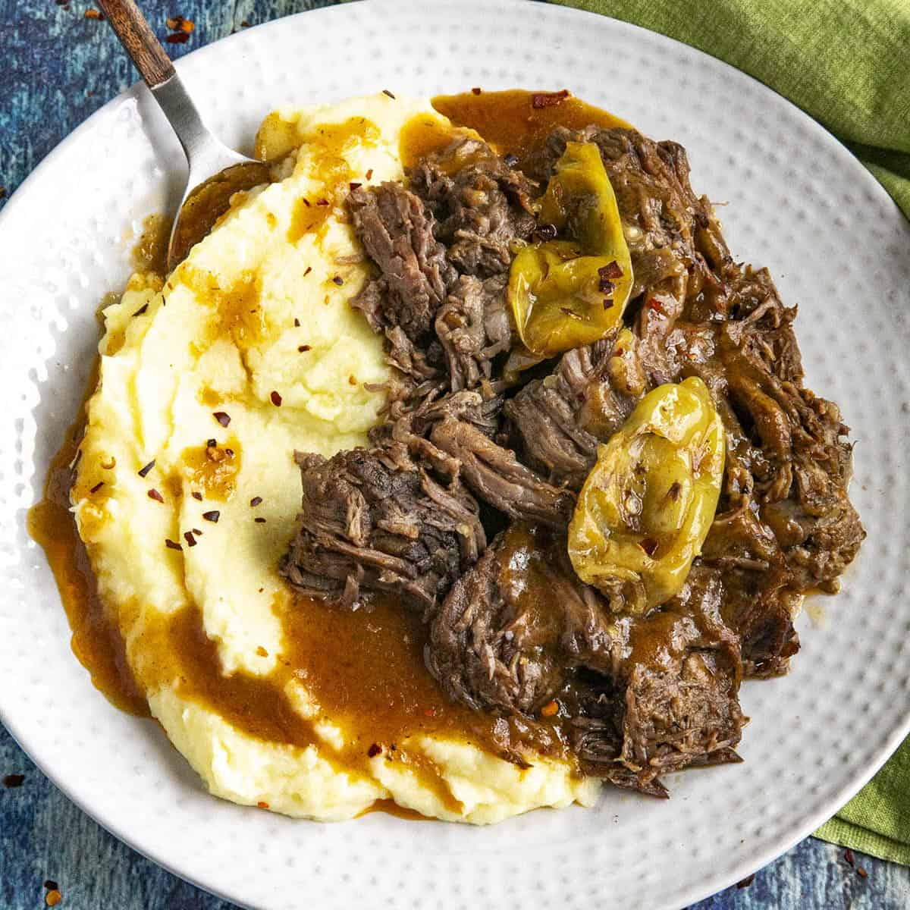

Bruce Roast

Description
A simple beef roast named after the creator, Bruce Keller.
Ingredients
- Sliced roast beef
- 1 can mushroom gravy
- 1 can brown gravy
- Mushrooms
- Onions
Preparation
- Cook mushrooms and onions to desired doneness
- Add all ingredients to a slow cooker
- Cook on high for 4 hours or low for 6 hours
- Serve as open-faced sandwiches!